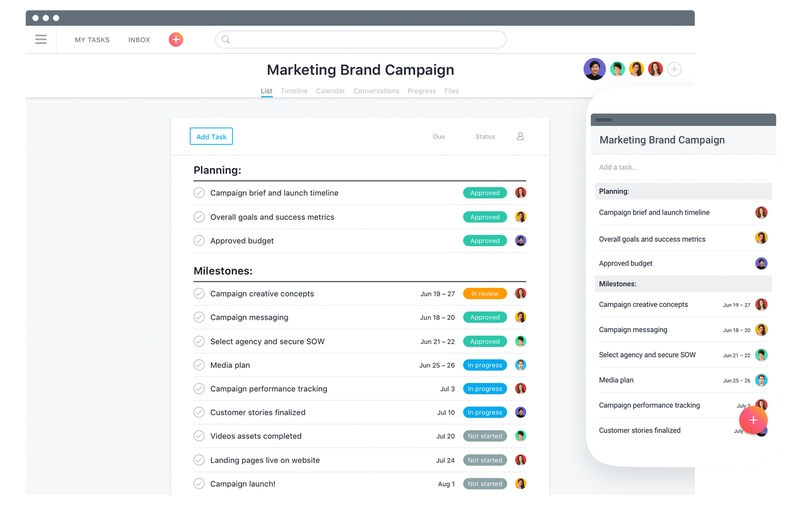
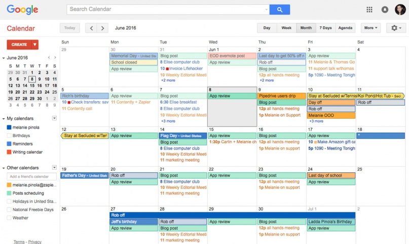
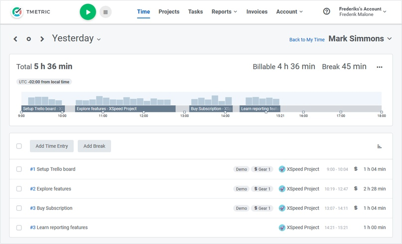
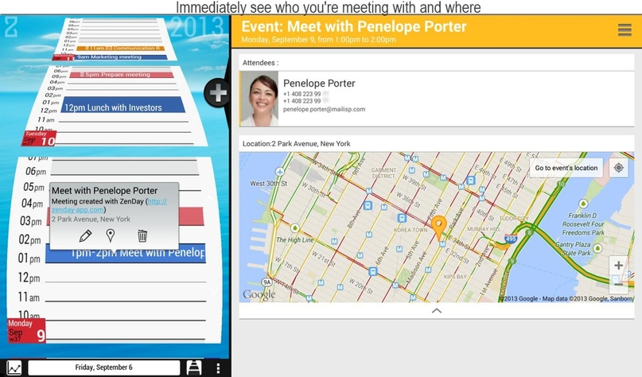
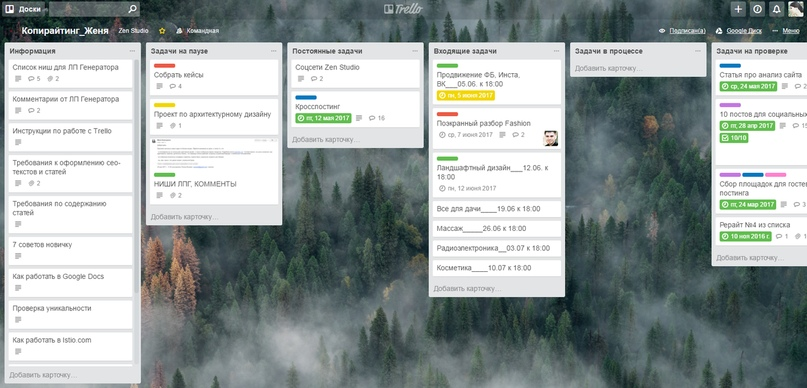
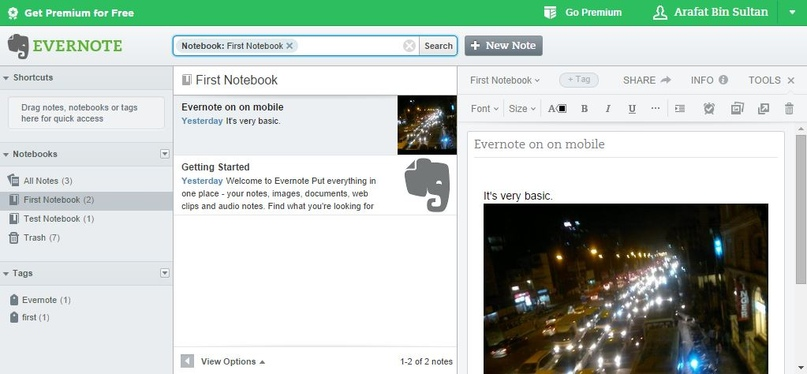
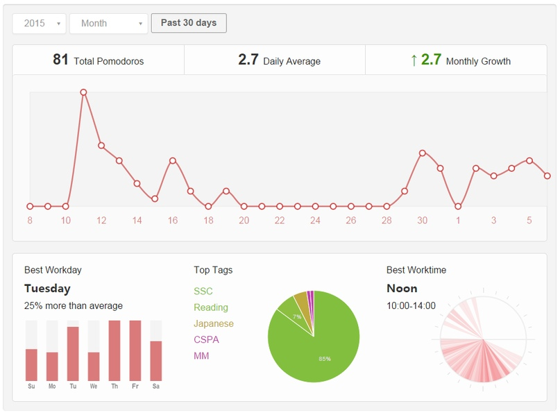
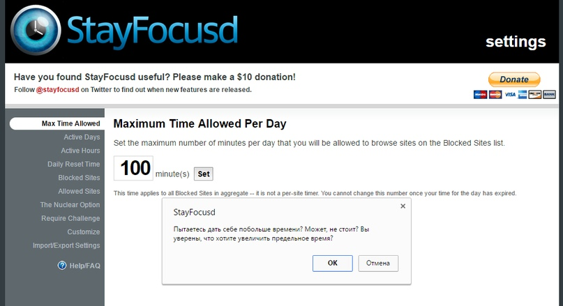
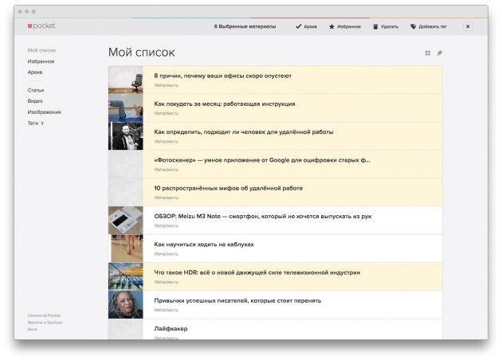
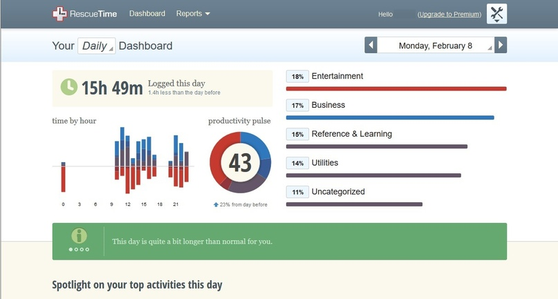

Навигация по статье:
Мы подготовили обзор проверенных сервисов и приложений для управления задачами, идеями и временем. Все они бесплатные, так что устанавливаем и пробуем!
Asana
Интуитивно-понятная система инструментов для управления задачами. В бесплатной версии можно создавать рабочие столы по проектам, добавлять к ним участников, пользоваться календарём и выставлять сроки задач, а также вести статистику. Интегрируется со сторонними сервисами: Dropbox, Evernote, Google Drive, Jira, Slack, GitHub, GitLab и других.
Google Календарь
Да-да, как ни странно, обычный календарь от Google. Мы удивились, узнав, что многие до сих пор его игнорируют. Поэтому также включаем в этот список и рассказываем почему.
Во-первых, удобно планировать долгосрочные дела. Во-вторых, сервис напомнит о важных встречах SMS-уведомлениями. Кроме того, можно создать единый календарь, например, на всю команду. Как и любой продукт Google, он синхронизируется со всеми сервисами.
TMeric
Простое веб-приложение для отслеживания рабочего времени в проектах. Сервис позволяет вести список контактов и проектов, фиксирует стоимость работ и учет заработанных средств. Интегрируется с RedMine, Jira, Asana, Trello и другими популярными системами.
ZenDay
Отличное мобильное приложение с календарем, планировщиком и менеджером задач. Помогает распределить дела и отделить рабочие от личной жизни. Что немаловажно, задачи синхронизируются на всех устройствах. ZenDay не отличается особой сложностью, но нужно привыкнуть к логике планирования. На скриншоте видно, что они представлены в виде бесконечной ленты событий.
Синхронизация осуществляется через календарь Google, и все дополнительные сервисы интегрируются без проблем. Добавленные ранее задачи представляются в виде списка по неделям, и для каждой из них можно отметить срок выполнения.
Trello
Самый популярный менеджер задач. Для тех, кто не слышал, рассказываем вкратце.
Представляет собой канбан-доску с карточками, которую можно использовать лично или для управления задачами в команде. В карточках можно оставлять комментарии, чек-листы, добавлять пользователей и контролировать дедлайны. Наши сотрудники используют этот сервис. Советуем и вам попробовать!
Evernote
Большая записная книжка для идей и хранения всего, что попадётся на глаза. Заметки лишь малая часть полезных функций. Можно писать статьи, добавлять файлы, и даже указать местоположение. Если нет возможности записать информацию, воспользуйтесь встроенным диктофоном. Сервис также работает на всех платформах и легко синхронизируется с устройствами.
Pomotodo
Простое, но мощное кроссплатформенное приложение для организации рабочего процесса и управления временем. Записывай идеи, планируй работу/учёбу, выполняй задачи, анализируй статистику — всё в одном приложении. Легко сохранить записи о выполненной работе и сформировать отчет о потраченном времени. Для удобного поиска есть хештеги, приоритеты и сортировка.
Stayfocusd
Порой сложно сконцентрироваться из-за обилия отвлекающих факторов в сети. Это веб-приложение отличная находка для тех, кто часто отвлекается на бесполезный серфинг по сайтам. Составьте список доменов, не относящихся к рабочему процессу и лимит времени нахождения на них. Как только вы превысите его, Stayfocusd заблокирует сайты до следующего дня.
Сервис позволяет сохранить интересные статьи, видео и веб-сайты из интернета. Можете делиться ими с друзьями, систематизировать список и подключать дополнительные инструменты. Для тайм-менеджмента полезен тем, что хранит все интересные материалы в одном месте, и в свободное время к ним можно вернуться. Любителям слушать подкасты понравится функция чтения статьи, в настройках которой есть синтез речи.
RescueTime
Ещё одна программа контролирующая, насколько эффективно тратится время в интернете. Кроме времени на выполнение задач, можно посчитать и непродуктивное время. Удобно, что самостоятельно выбираешь, какие приложения и сайты считать рабочей активностью, а какие развлечением. В любой момент можно посмотреть, куда это время было потрачено. Что крайне важно для анализа эффективности своей деятельности, коррекции и планирования.
Остались вопросы? Есть пожелания к статье? Заполни форму ниже, мы будем рады.